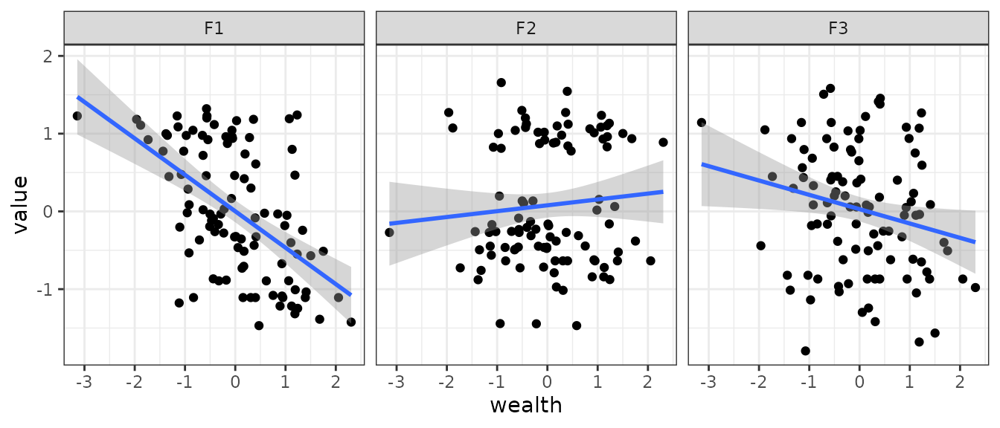
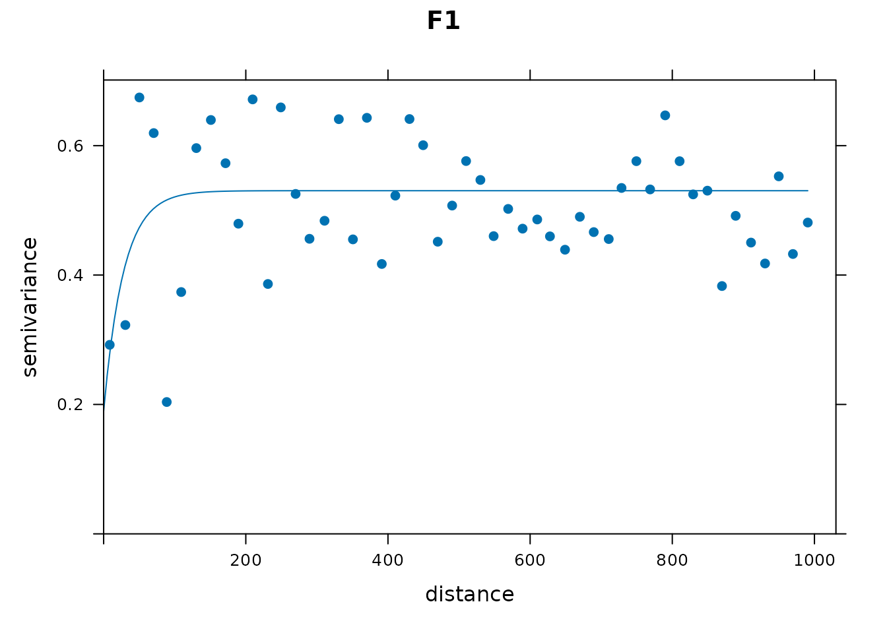
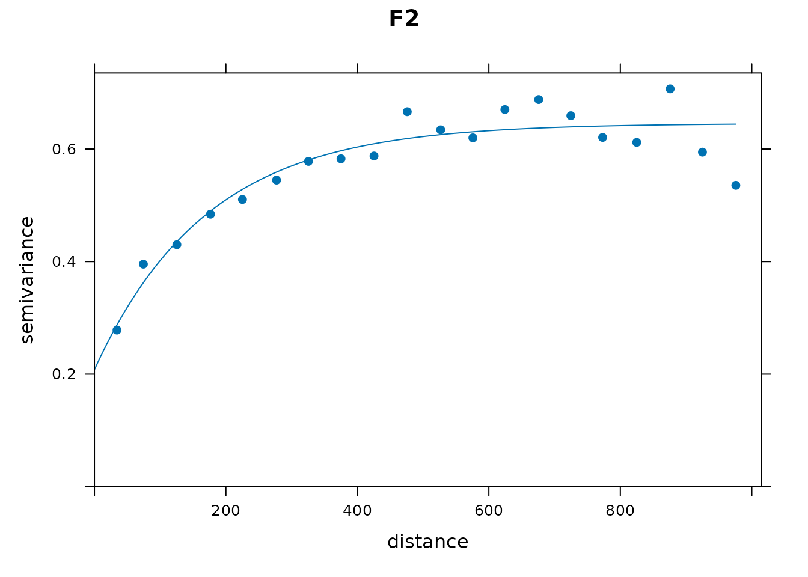
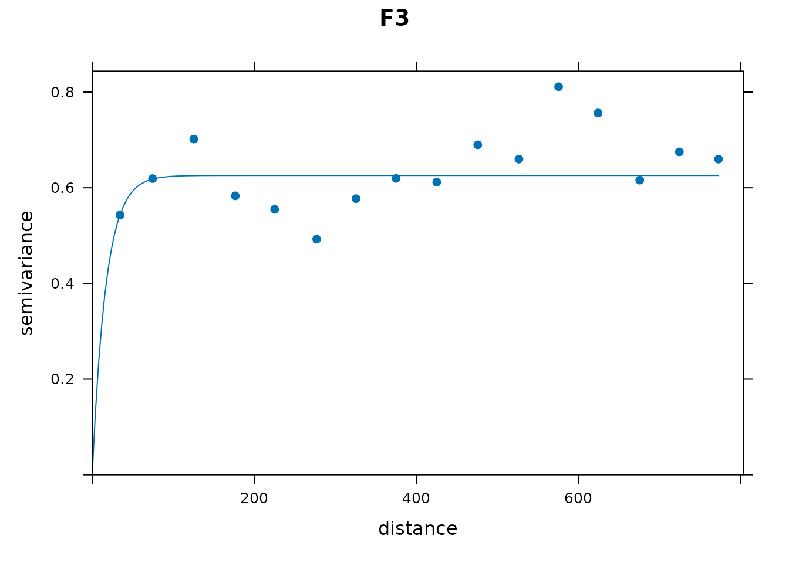
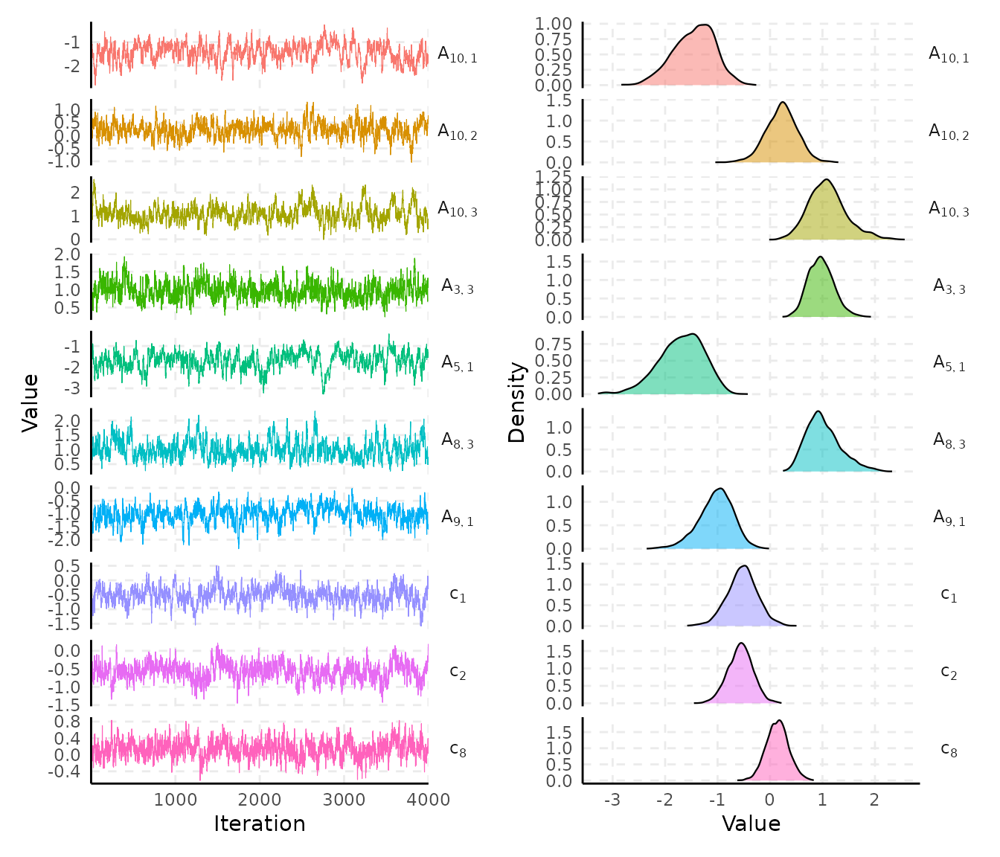
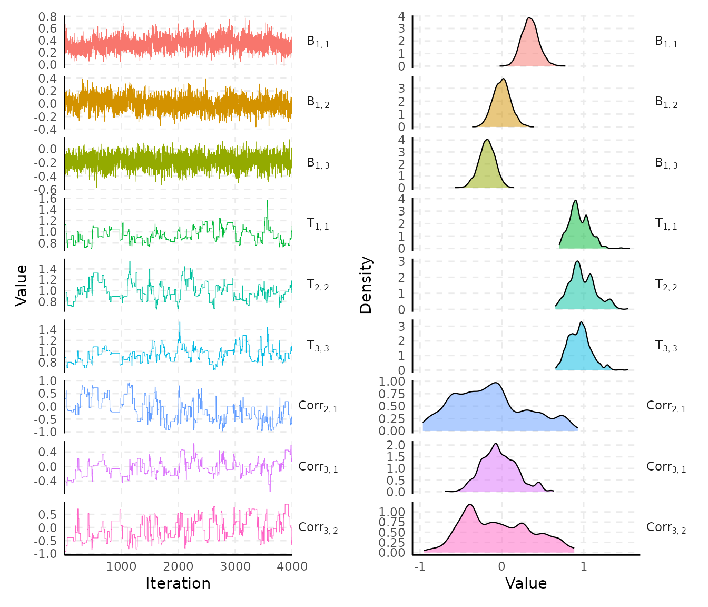
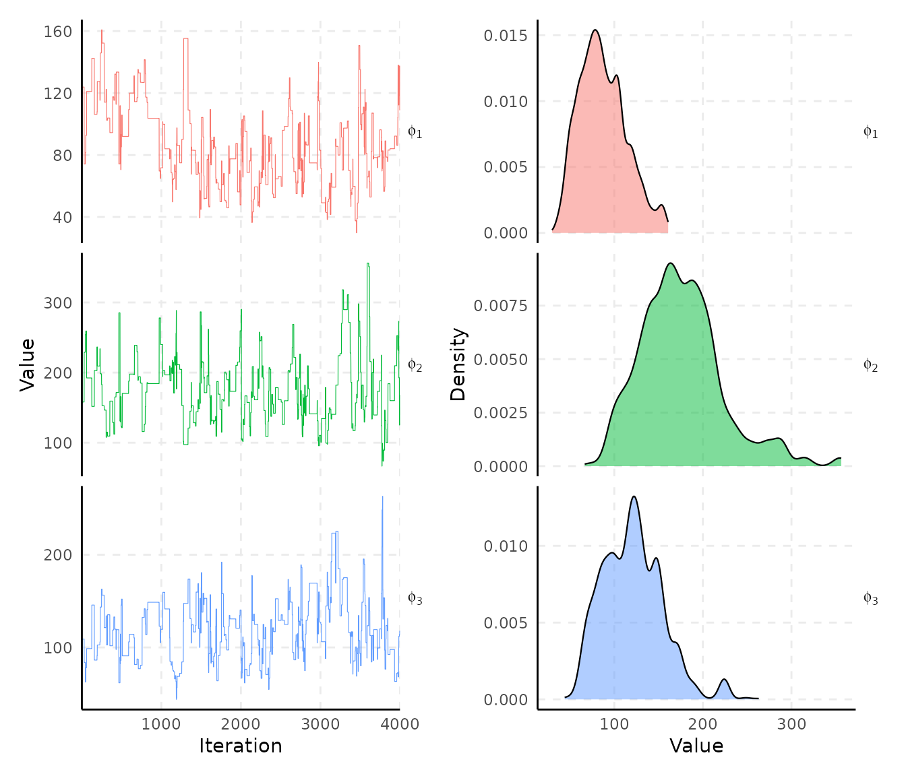
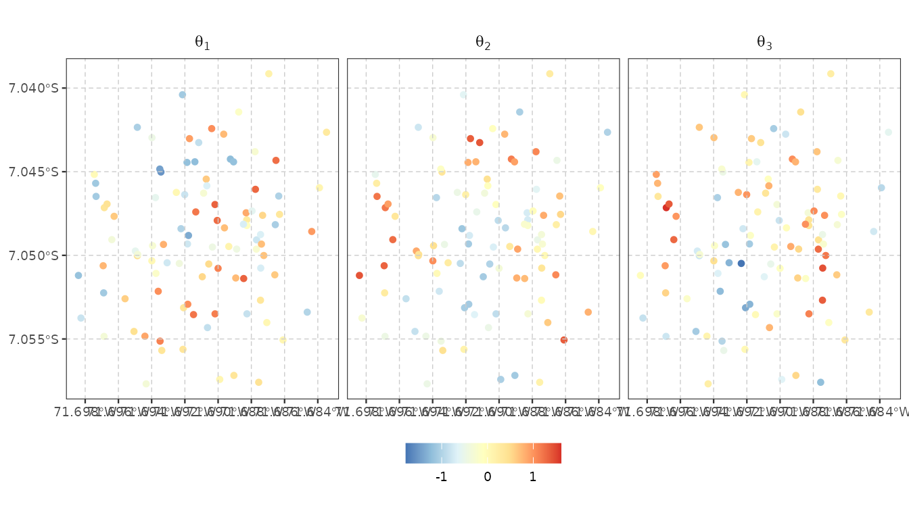

vignette("spifa") fits the full spatial model directly,
using a discrimination restriction and a spatial range prior already
decided. In practice both could be informed by previous knowledge or a
preliminary analysis on the data itself. This vignette walks through
that preliminary analysis, then fits the full model:
- Perform non-spatial exploratory item factor analysis to suggest a discrimination structure using the mirt package.
- Analyse the empirical variogram of that fit’s factor scores to suggest a spatial range using the gstat package.
- Fit the full spatial model with
spifa(), using the restriction and range prior from the previous two steps.
#> Loading required package: stats4#> Loading required package: lattice#> Linking to GEOS 3.12.1, GDAL 3.8.4, PROJ 9.4.0; sf_use_s2() is TRUEStep 1: Discrimination structure with mirt
mirt() requires named item columns;
ipixuna$items doesn’t have any, so we name them here:
#> item1 item2 item3 item4 item5 item6 item7 item8 item9 item10
#> [1,] 0 1 1 0 1 1 1 1 1 1
#> [2,] 1 0 0 1 0 1 1 1 1 0
#> [3,] 1 1 1 1 0 0 0 1 1 1
#> [4,] 0 0 0 0 0 0 0 0 0 0
#> [5,] 1 0 1 0 1 1 1 1 1 1
#> [6,] 0 0 0 0 0 0 0 0 0 0We fit an exploratory (unrestricted) 2PL item factor model and rotate it (varimax) towards a simple structure:
set.seed(11)
efa <- mirt(items, model = nfactors, itemtype = "2PL", verbose = FALSE)
loadings <- summary(efa, rotate = "varimax", verbose = FALSE)$rotF
loadings#>
#> Loadings:
#> F1 F2 F3
#> item1 0.993
#> item2 0.351 0.438 0.373
#> item3 0.248 0.409 0.654
#> item4 0.741
#> item5 0.967 -0.251
#> item6 0.808 0.150 -0.164
#> item7 0.740 0.115 0.323
#> item8 0.181 0.145 0.749
#> item9 0.589 0.505 0.497
#> item10 0.876 0.240 0.405
#>
#> F1 F2 F3
#> SS loadings 3.47 1.779 2.228Thresholding small loadings to zero turns this into a
0/1 restriction:
A <- (abs(loadings) > 0.24) * 1
A#> F1 F2 F3
#> item1 0 1 0
#> item2 1 1 1
#> item3 1 1 1
#> item4 0 0 1
#> item5 1 1 0
#> item6 1 0 0
#> item7 1 0 1
#> item8 0 0 1
#> item9 1 1 1
#> item10 1 1 1This is only one approach, different rotations could be applied
depending on the questionnaire and the latent construct under analysis.
In this example, we will use A to constrain discrimination
parameters to zero.
Step 2: Spatial range with gstat
The second thing vignette("spifa") takes as given is
priors$range, the prior for each Gaussian process’s spatial
range. mirt’s factor scores give a first estimate of each
household’s latent abilities, which we can examine spatially with an
empirical variogram.
Estimate the latent factors
First, we obtain the estimated latent factors using
fscores from mirt:
fscore <- fscores(efa, rotate = "varimax")
colnames(fscore) <- paste0("F", seq_len(nfactors))
head(fscore)#> F1 F2 F3
#> [1,] 1.3209072 -0.08659718 0.40473236
#> [2,] -0.5338734 0.81141612 0.08410447
#> [3,] -0.5491064 1.13344286 1.26656931
#> [4,] -1.1081944 -0.63596499 -0.86982681
#> [5,] 0.9608746 1.01811627 0.05732729
#> [6,] -1.1081944 -0.63596499 -0.86982681Then, we need to geo-reference these factor scores in order to
perform spatial analysis. gstat uses the default
coordinates units to compute distances between locations, so we will
also transform the coordinates system to a planar one where distances
can be computed in meters:
fscore_sf <- st_sf(
id = ipixuna$id, wealth = ipixuna$wealth, as.data.frame(fscore),
geometry = st_transform(st_geometry(ipixuna), 32719)
)
fscore_sf#> Simple feature collection with 100 features and 5 fields
#> Geometry type: POINT
#> Dimension: XY
#> Bounding box: xmin: 201883.2 ymin: 9219014 xmax: 203528.6 ymax: 9221070
#> Projected CRS: WGS 84 / UTM zone 19S
#> First 10 features:
#> id wealth F1 F2 F3 geometry
#> 1 1 -0.57212306 1.32090723 -0.08659718 0.40473236 POINT (202051.7 9219614)
#> 2 2 -0.92003870 -0.53387343 0.81141612 0.08410447 POINT (203142.2 9221070)
#> 3 3 1.23197630 -0.54910639 1.13344286 1.26656931 POINT (203106.4 9220133)
#> 4 4 0.30801774 -1.10819444 -0.63596499 -0.86982681 POINT (202804.6 9220098)
#> 5 5 -0.06247617 0.96087465 1.01811627 0.05732729 POINT (203407.1 9219495)
#> 6 6 2.05414943 -1.10819444 -0.63596499 -0.86982681 POINT (202764.3 9220705)
#> 7 7 2.30552728 -1.42405321 0.88850676 -0.97949497 POINT (202274.5 9219862)
#> 8 8 0.16913811 -0.70618866 0.88880362 -0.01218983 POINT (203219 9220140)
#> 9 9 -0.21989753 0.03224795 -1.44583313 -0.92989481 POINT (202584.1 9219519)
#> 10 10 -0.91744763 0.08558966 1.65688463 0.33149164 POINT (203053.4 9220554)Evaluate predictors effects
We can evaluate the effect of wealth on this estimated latent factors:
fscore_sf |>
tidyr::pivot_longer(F1:F3) |>
ggplot(aes(wealth, value)) +
geom_point() +
geom_smooth(method = 'lm', formula = y ~ x) +
facet_wrap(~ name) +
theme_bw()
There seems to be an effect in F1 and F3, so we will analyse the
residual spatial structure after taking into account wealth
effect:
Evaluate the spatial structure
From gstat, we can use variogram() to
obtain the empirical variogram, vgm() to define a
theoretical variogram and fit.variogram() to fit the
theoretical model to the empirical variogram.
vg1 <- variogram(F1 ~ wealth, fscore_sf, width = 20, cutoff = 1000)
vg1_fit <- fit.variogram(vg1, model = vgm(psill = 0.6, "Exp", range = 100, nugget = 0.1))
vg1_fit#> model psill range
#> 1 Nug 0.1898512 0.00000
#> 2 Exp 0.3404936 28.01651
plot(vg1, vg1_fit, pch = 19, main = "F1")
For F1, we can see that there is some evidence of spatial correlation at small scale.
vg2 <- variogram(F2 ~ wealth, fscore_sf, width = 50, cutoff = 1000)
vg2_fit <- fit.variogram(vg2, model = vgm(psill = 0.6, "Exp", range = 100, nugget = 0.1))
vg2_fit#> model psill range
#> 1 Nug 0.2078264 0.0000
#> 2 Exp 0.4378773 170.9282
plot(vg2, vg2_fit, pch = 19, main = "F2")
For F2, there is a much clearer spatial structure with a range
parameter around 170.
vg3 <- variogram(F3 ~ wealth, fscore_sf, width = 50, cutoff = 800)
vg3_fit <- fit.variogram(vg3, model = vgm(psill = 0.6, "Exp", range = 100, nugget = 0.1))#> Warning in fit.variogram(vg3, model = vgm(psill = 0.6, "Exp", range = 100, : No convergence after
#> 200 iterations: try different initial values?
vg3_fit#> model psill range
#> 1 Nug 0.0000000 0.00000
#> 2 Exp 0.6257179 16.92687
plot(vg3, vg3_fit, pch = 19, main = "F3")
For F3 also the range parameter seems to be small.
In general, there is some evidence of spatial correlation in the
latent factors, and specifically in F2 the spatial structure is strong
with a range parameter around 170. This gives a good understanding of
plausible values for the range parameters of our spifa
model. However, remember that the spifa and
mirt models are not exactly the same, so these values
should be taken only as a reference to decide on our
constraints and priors.
Step 3: Spatial modelling with spifa
With A from Step 1 and a range prior from Step 2 in
hand, spifa() can fit the full spatial model, one
independent Gaussian process per factor by default. For the range prior,
F2’s estimate is the one clear signal – with only 100 households, F1 and
F3’s much smaller ranges are more likely noise than genuine short-range
structure – so we use a common reference value of 150 (close to F2’s
~170) for all three factors:
set.seed(1)
samples <- spifa(
items ~ wealth, data = ipixuna, nfactors = nfactors,
burnin = 1000, niter = 4000,
constraints = list(discrimination = A, loading = diag(nfactors)),
priors = list(range = list(initial = 150, mean = 150, sd = 0.4)))
samples#> Item factor analysis model: spifa_pred
#> Formula: items ~ wealth
#> Dimensions: 100 respondents, 10 items, 3 latent factors, 3 spatial processes
#> MCMC: 1 chain, iter = 4000, thin = 1, samples = 4000
#>
#> Item model parameters:
#> mean median sd q10 q90 ess_bulk rhat
#> c[1] -0.528 -0.522 0.29 -0.902 -0.1629 118 1
#> c[2] -0.566 -0.558 0.24 -0.875 -0.2665 104 1
#> c[3] -0.629 -0.612 0.29 -1.023 -0.2687 91 1
#> c[4] -0.380 -0.376 0.21 -0.653 -0.1126 223 1
#> c[5] -0.359 -0.347 0.31 -0.750 0.0168 147 1
#> c[6] 0.035 0.028 0.23 -0.247 0.3336 162 1
#> c[7] 0.193 0.185 0.24 -0.107 0.4975 123 1
#> c[8] 0.141 0.144 0.21 -0.130 0.4145 205 1
#> c[9] 0.632 0.636 0.33 0.203 1.0421 78 1
#> c[10] 0.371 0.361 0.34 -0.044 0.8075 65 1
#> A[2,1] -0.293 -0.288 0.23 -0.595 0.0069 244 1
#> A[3,1] -0.125 -0.119 0.24 -0.425 0.1764 342 1
#> A[5,1] -1.693 -1.660 0.43 -2.261 -1.1667 100 1
#> A[6,1] -1.246 -1.216 0.33 -1.714 -0.8453 215 1
#> A[7,1] -1.155 -1.117 0.32 -1.592 -0.7836 169 1
#> A[9,1] -1.031 -1.004 0.33 -1.462 -0.6357 141 1
#> A[10,1] -1.446 -1.410 0.39 -1.975 -0.9729 109 1
#> A[1,2] 1.157 1.148 0.35 0.703 1.6158 110 1
#> A[2,2] 0.677 0.673 0.21 0.408 0.9559 309 1
#> A[3,2] 0.668 0.635 0.32 0.302 1.0823 143 1
#> A[5,2] -0.076 -0.082 0.27 -0.404 0.2636 212 1
#> A[9,2] 0.870 0.840 0.31 0.504 1.2846 210 1
#> A[10,2] 0.222 0.230 0.30 -0.156 0.5987 206 1
#> A[2,3] 0.531 0.515 0.26 0.224 0.8630 128 1
#> A[3,3] 0.972 0.961 0.24 0.671 1.2852 177 1
#> A[4,3] 0.935 0.906 0.29 0.590 1.3242 227 1
#> A[7,3] 0.703 0.670 0.28 0.380 1.0459 214 1
#> A[8,3] 1.019 0.971 0.33 0.632 1.4709 172 1
#> A[9,3] 0.815 0.811 0.30 0.441 1.1894 219 1
#> A[10,3] 1.096 1.071 0.36 0.663 1.5752 126 1
#>
#> Factor model parameters:
#> mean median sd q10 q90 ess_bulk rhat
#> B[1,1] 3.5e-01 3.4e-01 0.104 0.22 0.478 98.6 1.0
#> B[1,2] -5.6e-04 1.7e-04 0.106 -0.14 0.135 83.3 1.0
#> B[1,3] -1.8e-01 -1.8e-01 0.099 -0.31 -0.058 807.7 1.0
#> T[1,1] 9.4e-01 9.3e-01 0.121 0.79 1.104 19.3 1.1
#> T[2,2] 9.9e-01 9.6e-01 0.161 0.79 1.219 39.7 1.0
#> T[3,3] 9.5e-01 9.5e-01 0.133 0.79 1.119 25.9 1.1
#> phi[1] 8.7e+01 8.4e+01 26.337 52.85 122.385 7.1 1.1
#> phi[2] 1.8e+02 1.7e+02 47.019 120.91 233.438 54.9 1.0
#> phi[3] 1.2e+02 1.2e+02 33.999 77.07 160.776 44.8 1.0
#> Corr[2,1] -1.5e-01 -1.7e-01 0.445 -0.68 0.519 4.9 1.2
#> Corr[3,1] -3.3e-02 -5.8e-02 0.214 -0.28 0.229 7.2 1.1
#> Corr[3,2] -5.2e-02 -1.0e-01 0.417 -0.54 0.534 9.6 1.1
#>
#> ess_bulk is the bulk effective sample size; rhat is the potential
#> scale reduction factor on split chains (Rhat = 1 at convergence).
#> Use summary() for the full set of statistics (incl. ess_tail).Note this uses spifa()’s own default (non-informed)
initial values for everything except the spatial range – the same
starting point a real user, without further domain knowledge, would use.
The full analysis can now proceed using the methods presented in
vignette("spifa") and the package’s other vignettes.
Visualize
Let’s visualize the chains and densities of the posterior. Observe which parameters have better mixing than others.



Predict
Let’s visualize the spatial pattern of the latent factors mean prediction.
pred_samples <- predict(samples)
plot_predict(pred_samples) +
scale_colour_distiller(palette = "RdYlBu")
You can continue your analysis using the other methods and functions shown in the package’s vignettes.